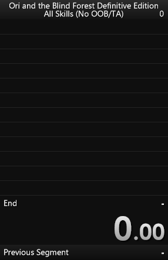
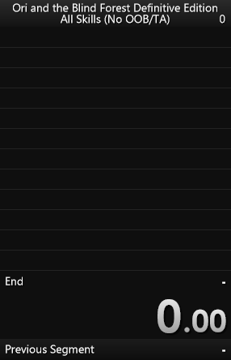

Ori and the Blind Forest: Definitive Edition
This tutorial aims to explain how to fully setup LiveSplit and more specifically for Ori and the Blind Forest Definitive Edition. It follows the video tutorial originally made by Trojandude12.
LiveSplit is a timer program for speedrunners made to help you time your runs and track your progress by allowing you to split your run into individual segments. Some games may have tools called "autosplitters" that will automatically split for you, which is the case for Ori and the Blind Forest: Definitive Edition. Finally it embeds SpeedRunsLive support to allow you to join races and compete with the community members.
All you need is to download LiveSplit here and to go through the installation. Once the installation is done, launch LiveSplit and you will get something like this:

The autosplitter is a LiveSplit tool which splits when a condition based on a game event is filled. The latest versions of LiveSplit embed an autosplitter for Ori and the Blind Forest created by DevilSquirrel.
To enable the autosplitter, you first need to set the game and the category you're running and LiveSplit will detect if there is an autosplitter available for it. Here we want to set
To do so, go to "Edit Splits..."


If you're running a subcategory (No OOB/TA is a sub category of All Skills alongside No Restrictions), you may also need to set it in the "Additional Info" tab. Here you want to set the All Skills sub category "No OOB/TA".

Now you should see that a configurable autosplitter is available for this game. You should now be able to "Activate" it.

In order to configure the autosplitter, click the "Settings" button next to the "Activate" one. You should have something like this:

For now there are only 2 autosplits set, "Start Game" and "End Game" which will respectively start the timer when you chose the difficulty and stop it when you lose the control of Naru at the end of the run.


You are basically good to go. Nevertheless you might want to add some splits in the middle of the run to track your progress, see where you lose time from one run to another and compute what we call a Sum of Bests.
Until now, you had a unique split. The split will be used to record the timer value when you finishes the run. This is your end game split. Before doing anything, we will give that split a name. It can be whatever you want, but we will name it "End" to keep it explicit.
 

We can now add as many splits as we want, one by one. As an example we will add the "Wall Jump" split to our layout. To do so we first need to to hit "Insert Above" then give the new split the name "Wall Jump".
We also need to add it to our autosplitter settings to make it split when we actually get wall jump. For that we need to hit "Settings", and add the correct autosplit
That way, we can now add a split for Dash, for Double Jump, for Bash, ...
Everytime you add a new split, you need to make sure that you add its related autosplit and keep everything in the right order. To check that your autosplitter is correctly set up, if you don't count "Start Game" which only starts the timer and does not match any split, you need to have as many autosplits as splits on your layout !
For reference, here is the most common split list for All Skills No OOB/TA
Because the layout and the splits are independent, there are extra empty lines. To remove the unwanted lines, go to
Edit layout... > Layout Settings > Splits

Then decrement the Total Splits value until the layout looks fine. You will need to update this value everytime you add/remove a split.

LiveSplit offers a lot of customization tools. Just spend some time in the layout
settings and build a LiveSplit layout you like.
Here are examples of what layout you can make with LiveSplit:


Now that we changed what we needed to, let's save our changes. Right-click on the LiveSplit window, then both click Save Splits and Save Layout. LiveSplit will ask you to save 2 files:
I highly recommend you to think about how you will organize your files already. You will probably need a split file and a layout file for each game, and each category of a game. For example, you can create a folder "OriDE" with another "All Skills No OOBTA" inside it, containing both LiveSplit files.